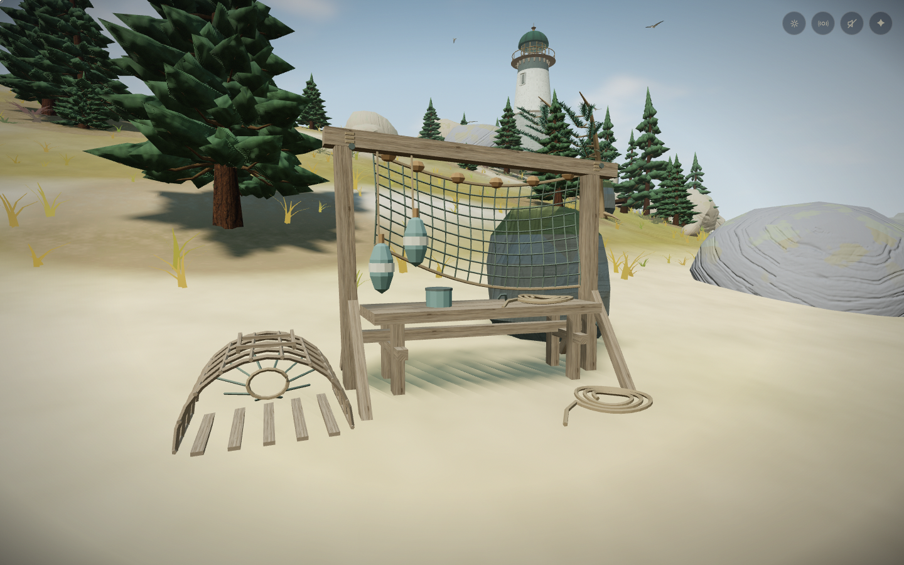
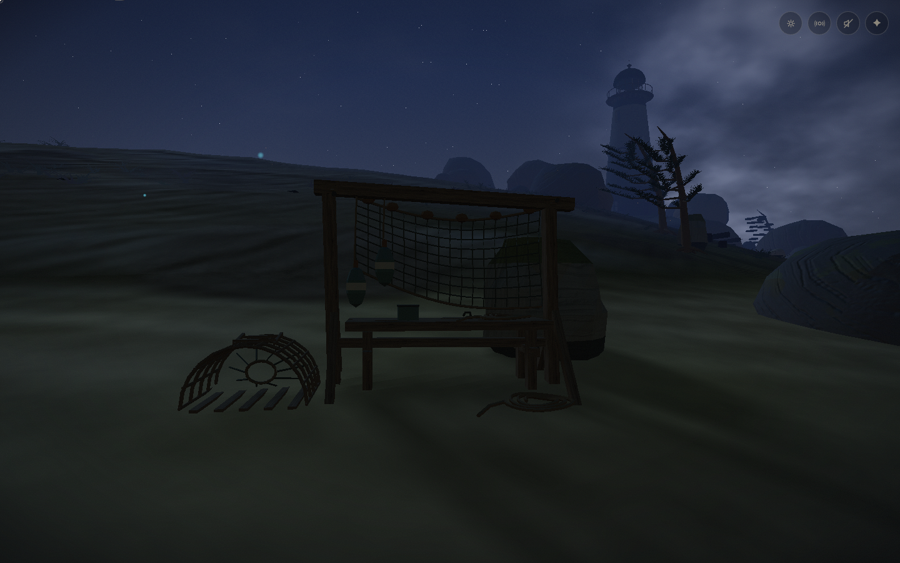
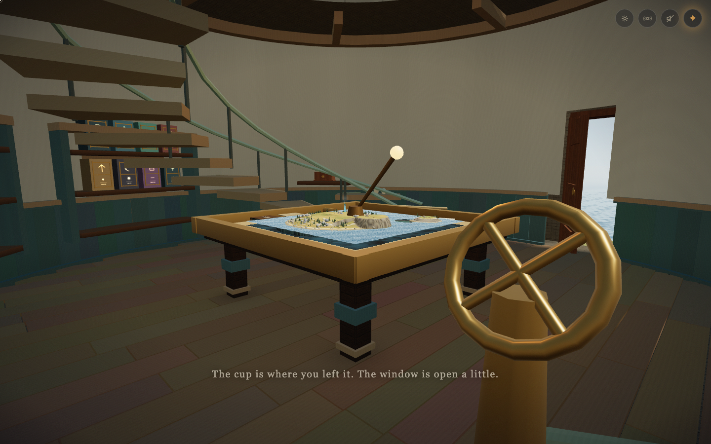

ABYME / Blender + imagegen / September 2026Earlier detail pass. Open the current review: a quieter shore and living Blender birds →
A shore someone has worked.
A salt-worn drying rack, an open creel, coiled line and painted floats beside the landing beach. Low eroded tide rocks carry clusters of hollow barnacles and mussels. These are screenshots of the integrated game.

Full-size equipment, with generated timber grain following each board.
The landing, before and after

Last winter, at night. Existing world lighting.
The miniature keeps the rack's silhouette in 98 triangles.Measured geometry cost
| Fixed view | Added draw calls | Added triangles |
|---|
| Landing beach, noon / night | 5 | 13,876 |
| Study and miniature, noon / night | 1 | 98 |
| Forest, noon / night | 0 | 0 |
Separate near, distant and miniature meshes keep fine detail at useful viewing distances. The captured views remain below the existing 525-call and one-million-triangle ceilings. Live GPU samples are recorded in the report and are not a controlled benchmark.